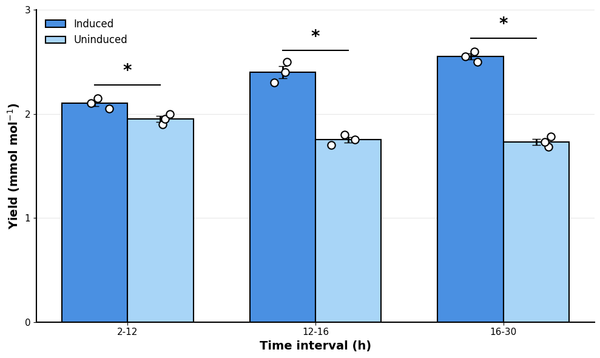

Figure 2b (Rong, Frey et. al. 2024)#
 Caption: “Growth curve of the xylitol strain with (dark blue)
or without (light blue) the CRISPRi switch induced. (…) Error bars and shaded
areas indicate mean ± s.d. (n = 4 biological replicates (…)
OD values (…) were measured using a Jenway 6705 UV/Vis spectrophotometer (…)”
Caption: “Growth curve of the xylitol strain with (dark blue)
or without (light blue) the CRISPRi switch induced. (…) Error bars and shaded
areas indicate mean ± s.d. (n = 4 biological replicates (…)
OD values (…) were measured using a Jenway 6705 UV/Vis spectrophotometer (…)”
import matplotlib.pyplot as plt
import pandas as pd
import seaborn as sns
For protability the data is directly included as a dictionary. See the commented out code how the data was obtained from the CSV file figure_2b.csv.
# fname = "figure_2b.csv"
# data = pd.read_csv(fname).round(4)
# data.to_dict(orient="list")
data = {
"timepoint (h)": [2, 12, 12, 16, 16, 30],
"Uninduced_rep1": [1.8465, 1.8465, 1.8654, 1.8654, 1.7892, 1.7892],
"Uninduced_rep2": [1.8806, 1.8806, 1.5969, 1.5969, 1.8764, 1.8764],
"Uninduced_rep3": [2.0512, 2.0512, 1.5597, 1.5597, 1.627, 1.627],
"Uninduced_rep4": [1.9217, 1.9217, 1.9355, 1.9355, 1.65, 1.65],
"Induced_rep1": [2.1165, 2.1165, 2.1316, 2.1316, 2.3346, 2.3346],
"Induced_rep2": [2.0487, 2.0487, 3.0061, 3.0061, 2.2944, 2.2944],
"Induced_rep3": [2.0778, 2.0778, 2.1711, 2.1711, 2.4402, 2.4402],
"Induced_rep4": [2.0859, 2.0859, 2.0865, 2.0865, 2.483, 2.483],
}
data = pd.DataFrame(data).set_index("timepoint (h)").rename_axis(columns="replicate")
data
| replicate | Uninduced_rep1 | Uninduced_rep2 | Uninduced_rep3 | Uninduced_rep4 | Induced_rep1 | Induced_rep2 | Induced_rep3 | Induced_rep4 |
|---|---|---|---|---|---|---|---|---|
| timepoint (h) | ||||||||
| 2 | 1.8465 | 1.8806 | 2.0512 | 1.9217 | 2.1165 | 2.0487 | 2.0778 | 2.0859 |
| 12 | 1.8465 | 1.8806 | 2.0512 | 1.9217 | 2.1165 | 2.0487 | 2.0778 | 2.0859 |
| 12 | 1.8654 | 1.5969 | 1.5597 | 1.9355 | 2.1316 | 3.0061 | 2.1711 | 2.0865 |
| 16 | 1.8654 | 1.5969 | 1.5597 | 1.9355 | 2.1316 | 3.0061 | 2.1711 | 2.0865 |
| 16 | 1.7892 | 1.8764 | 1.6270 | 1.6500 | 2.3346 | 2.2944 | 2.4402 | 2.4830 |
| 30 | 1.7892 | 1.8764 | 1.6270 | 1.6500 | 2.3346 | 2.2944 | 2.4402 | 2.4830 |
data_long = data.stack().to_frame("yield").reset_index()
data_long["condition"] = data_long["replicate"].str.split("_").str[0]
data_long
| timepoint (h) | replicate | yield | condition | |
|---|---|---|---|---|
| 0 | 2 | Uninduced_rep1 | 1.8465 | Uninduced |
| 1 | 2 | Uninduced_rep2 | 1.8806 | Uninduced |
| 2 | 2 | Uninduced_rep3 | 2.0512 | Uninduced |
| 3 | 2 | Uninduced_rep4 | 1.9217 | Uninduced |
| 4 | 2 | Induced_rep1 | 2.1165 | Induced |
| 5 | 2 | Induced_rep2 | 2.0487 | Induced |
| 6 | 2 | Induced_rep3 | 2.0778 | Induced |
| 7 | 2 | Induced_rep4 | 2.0859 | Induced |
| 8 | 12 | Uninduced_rep1 | 1.8465 | Uninduced |
| 9 | 12 | Uninduced_rep2 | 1.8806 | Uninduced |
| 10 | 12 | Uninduced_rep3 | 2.0512 | Uninduced |
| 11 | 12 | Uninduced_rep4 | 1.9217 | Uninduced |
| 12 | 12 | Induced_rep1 | 2.1165 | Induced |
| 13 | 12 | Induced_rep2 | 2.0487 | Induced |
| 14 | 12 | Induced_rep3 | 2.0778 | Induced |
| 15 | 12 | Induced_rep4 | 2.0859 | Induced |
| 16 | 12 | Uninduced_rep1 | 1.8654 | Uninduced |
| 17 | 12 | Uninduced_rep2 | 1.5969 | Uninduced |
| 18 | 12 | Uninduced_rep3 | 1.5597 | Uninduced |
| 19 | 12 | Uninduced_rep4 | 1.9355 | Uninduced |
| 20 | 12 | Induced_rep1 | 2.1316 | Induced |
| 21 | 12 | Induced_rep2 | 3.0061 | Induced |
| 22 | 12 | Induced_rep3 | 2.1711 | Induced |
| 23 | 12 | Induced_rep4 | 2.0865 | Induced |
| 24 | 16 | Uninduced_rep1 | 1.8654 | Uninduced |
| 25 | 16 | Uninduced_rep2 | 1.5969 | Uninduced |
| 26 | 16 | Uninduced_rep3 | 1.5597 | Uninduced |
| 27 | 16 | Uninduced_rep4 | 1.9355 | Uninduced |
| 28 | 16 | Induced_rep1 | 2.1316 | Induced |
| 29 | 16 | Induced_rep2 | 3.0061 | Induced |
| 30 | 16 | Induced_rep3 | 2.1711 | Induced |
| 31 | 16 | Induced_rep4 | 2.0865 | Induced |
| 32 | 16 | Uninduced_rep1 | 1.7892 | Uninduced |
| 33 | 16 | Uninduced_rep2 | 1.8764 | Uninduced |
| 34 | 16 | Uninduced_rep3 | 1.6270 | Uninduced |
| 35 | 16 | Uninduced_rep4 | 1.6500 | Uninduced |
| 36 | 16 | Induced_rep1 | 2.3346 | Induced |
| 37 | 16 | Induced_rep2 | 2.2944 | Induced |
| 38 | 16 | Induced_rep3 | 2.4402 | Induced |
| 39 | 16 | Induced_rep4 | 2.4830 | Induced |
| 40 | 30 | Uninduced_rep1 | 1.7892 | Uninduced |
| 41 | 30 | Uninduced_rep2 | 1.8764 | Uninduced |
| 42 | 30 | Uninduced_rep3 | 1.6270 | Uninduced |
| 43 | 30 | Uninduced_rep4 | 1.6500 | Uninduced |
| 44 | 30 | Induced_rep1 | 2.3346 | Induced |
| 45 | 30 | Induced_rep2 | 2.2944 | Induced |
| 46 | 30 | Induced_rep3 | 2.4402 | Induced |
| 47 | 30 | Induced_rep4 | 2.4830 | Induced |
Create a bar plot with error bars for the measurement across the timepoints. Either use matplotlib or seaborn for a static plot.
fig, ax = plt.subplots(figsize=(10, 6))
sns.barplot(
data=data_long,
x="timepoint (h)",
y="yield",
hue="condition",
ax=ax,
)
<Axes: xlabel='timepoint (h)', ylabel='yield'>
Add individual data points
Show code of one soluti}on
fig, ax = plt.subplots(figsize=(10, 6))
sns.barplot(
data=data_long,
x="timepoint (h)",
y="yield",
hue="condition",
ci="sd",
capsize=0.1,
errwidth=2,
edgecolor="black",
linewidth=1.5,
palette=["#4A90E2", "#A8D5F7"],
ax=ax,
)
Claude Sonnet 4.5#
Prompt: “Can you generate some example data and code to generate the following plot using Python?” Context: adding a screenshot of Figure 2b from Rong, Frey et. al. 2024

Statistical Analysis:
--------------------------------------------------
2-12 hours:
Induced: 2.100 ± 0.029
Uninduced: 1.950 ± 0.029
p-value: 0.0213 *
12-16 hours:
Induced: 2.400 ± 0.058
Uninduced: 1.750 ± 0.029
p-value: 0.0005 *
16-30 hours:
Induced: 2.550 ± 0.029
Uninduced: 1.730 ± 0.029
p-value: 0.0000 *